📘Práctica 3.Instalar, configurar y securizar phpMyAdmin¶
Objetivos
- Instalar, asegurar y configurar phpMyAdmin en un servidor Ubuntu
- Proteger PhpMyAdmin contra accesos no autorizados
- Automatizar la instalación y configuración de phpMyAdmin mediante scripts de Bash
Instalar PHP¶
Instalar PHP para que luego se pueda ejecutar bien el phpmyadmin:
sudo apt install php libapache2-mod-php
Instalación de phpMyAdmin¶
Abre tu terminal y ejecuta el siguiente comando para instalar phpMyAdmin
sudo apt update
sudo apt install phpmyadmin php-mbstring php-zip php-gd php-json php-curl
Configurar phpMyAdmin para Apache¶
Durante la instalación se te pedirá que elijas el servidor web.
- Seleccionar
Apache
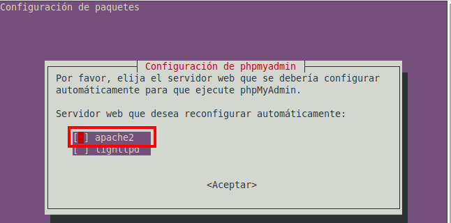
Habilitar el archivo de configuración de phpMyAdmin¶
Ejecuta el siguiente comando para habilitar el archivo.
sudo ln -s /etc/phpmyadmin/apache.conf /etc/apache2/conf-available/phpmyadmin.conf
sudo a2enconf phpmyadmin
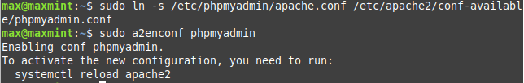
Habilitar la extensión mbstring y reiniciar Apache¶
Ejecuta el comando para habilitar la extensión mbstring
sudo phpenmod mbstring
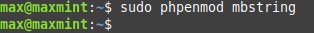
- Reiniciar el servicio
Apachesudo systemctl restart apache2
Configurar la base de datos para phpMyAdmin¶
Durante la instalación de phpMyAdmin,pedirá que configuremos una base de datos para phpMyAdmin con dbconfig-common
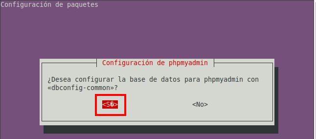
- Definimos la contraseña
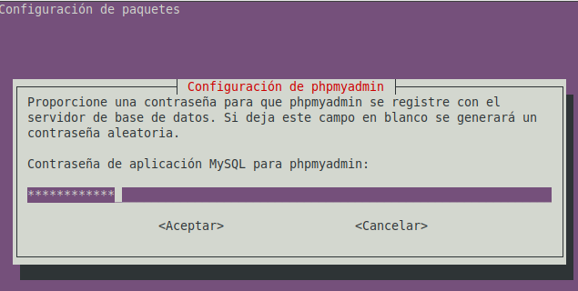
Configuración del Acceso por Contraseña para la Cuenta Root de MySQL¶
Iniciar sesión en MySQL como root
sudo mysql
ALTER USER 'root'@'localhost' IDENTIFIED WITH mysql_native_password BY 'Root_1234';
FLUSH PRIVILEGES;
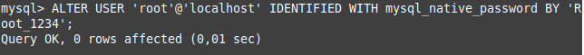
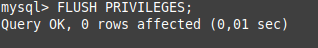
Otorgar privilegios a ROOT
GRANT ALL PRIVILEGES ON *.* TO 'root'@'localhost' WITH GRANT OPTION;
FLUSH PRIVILEGES;
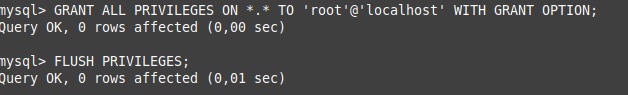
- Comprobar usuarios de MySQL
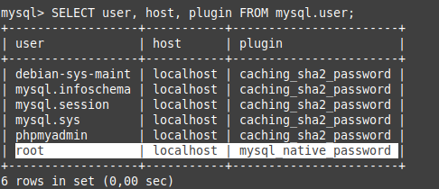
Configuración del Acceso por Contraseña para un Usuario Dedicado de MySQL¶
-
Crear un nuevo usuario con una contraseña segura:
CREATE USER 'phpmyadmin_max'@'localhost' IDENTIFIED BY 'Root_1234'; -
Otorgar privilegios al nuevo usuario
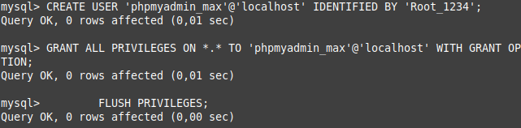GRANT ALL PRIVILEGES ON *.* TO 'phpmyadmin_max'@'localhost' WITH GRANT OPTION; FLUSH PRIVILEGES; -
Comprobar usuarios de MySQL
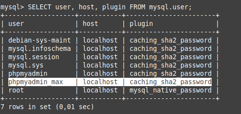
Securizando Instancia de phpMyAdmin¶
Habilitar sobrescrituras de archivos .htaccess en Apache:
- Edita el archivo de configuración de
phpMyAdmin:Asegúrate de que la directivasudo nano /etc/apache2/conf-available/phpmyadmin.confAllowOverrideestá configurada enAll
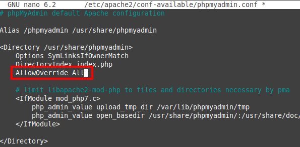
- Crear un archivo .htaccess en el directorio de phpMyAdmin:
sudo nano /usr/share/phpmyadmin/.htaccess
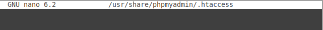
-
Agrega las siguientes líneas para habilitar la autenticación básica
AuthType Basic AuthName "Acceso Restringido" AuthUserFile /etc/phpmyadmin/.htpasswd Require valid-user
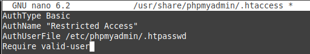
- Crear un archivo .htpasswd para almacenar las credenciales
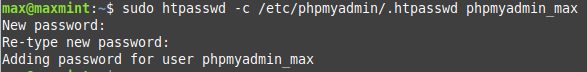
sudo htpasswd -c /etc/phpmyadmin/.htpasswd phpmyadmin_max
Comprobaciones¶
- Acceso a http://IP/phpmyadmin
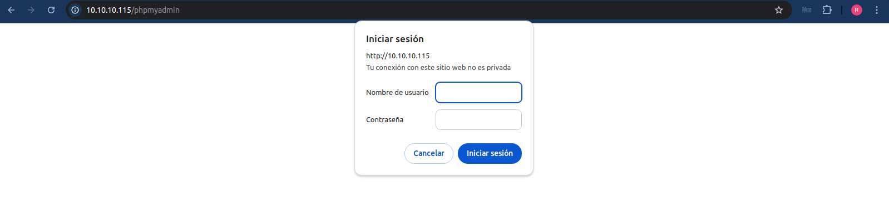
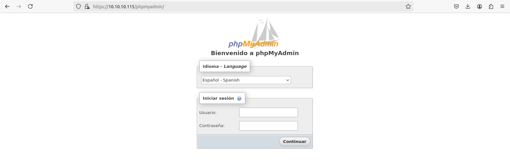